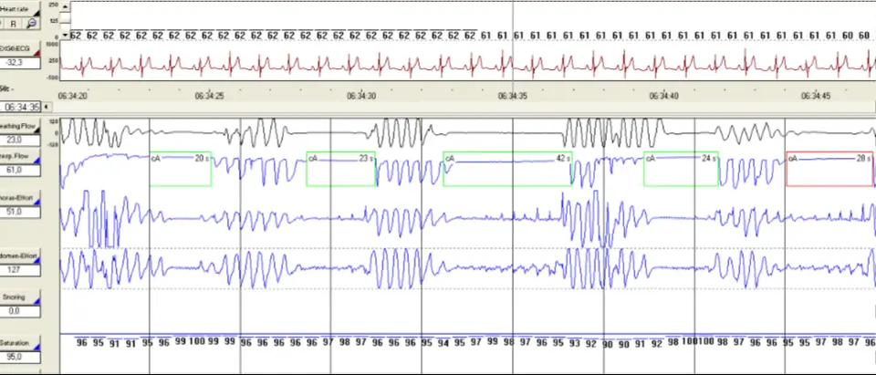

DX.3 — Troubles du sommeil (insomnie, sommeil insuffisant)
1. Définition et sémantique
Troubles du sommeil-éveilChapitre de la CIM-11 qui réunit insomnies, hypersomnolences, troubles respiratoires du sommeil, troubles du rythme circadien, parasomnies et mouvements anormaux du sommeil.
- Insomnie et sommeil insuffisantElle regroupe les troubles traités dans ce cours.
- HypersomnolenceElle désigne une somnolence diurne excessive malgré un sommeil nocturne d'une durée normale.
- Troubles respiratoires du sommeilIls désignent des pauses ou réductions du souffle pendant le sommeil, comme les apnées.
- Troubles du rythme circadienIls désignent un décalage entre l'horloge biologique et les horaires de vie.
- ParasomniesElles désignent des comportements anormaux pendant le sommeil, comme le somnambulisme.
- Mouvements anormaux du sommeilIls désignent des mouvements involontaires liés au sommeil, comme le syndrome des jambes sans repos.
Insomnie et sommeil insuffisantDSM-5 : trouble de l'insomnie
- Troubles du sommeil
- HypersomnolenceElle correspond à une somnolence diurne excessive malgré un sommeil nocturne d'une durée normale.
- Troubles respiratoires du sommeilIls correspondent à des pauses ou réductions du souffle pendant le sommeil, comme les apnées.
- Troubles du rythme circadienIls correspondent à un décalage entre l'horloge biologique et les horaires de vie.
- ParasomniesElles correspondent à des comportements anormaux pendant le sommeil, comme le somnambulisme.
- Mouvements anormaux du sommeilIls correspondent à des mouvements involontaires liés au sommeil, comme le syndrome des jambes sans repos.
Troubles du sommeilinsomnie, sommeil insuffisant
- Se distinguent l'insomnie chronique (au moins trois mois) et l'insomnie de courte durée
- Sommeil insuffisantLa durée de sommeil est trop courte.
Les troubles du sommeil désignent un sommeil trop court, trop haché ou non réparateur, avec un retentissement le jour (CIM-11)68. L'insomnieElle désigne la difficulté à s'endormir, à rester endormi ou le réveil trop précoce, malgré une occasion adéquate de dormir. La fatigue diurne est la plainte la plus fréquente. est chronique quand les symptômes durent au moins 3 mois avec un retentissement diurne (DSM-5 ; AIPS)11. Le sommeil insuffisantIl s'agit d'une durée de sommeil trop courte, par choix ou par contrainte, sans difficulté à dormir. L'adulte sain a besoin de 7 heures ou plus par nuit. s'en distingue : la personne dort bien, mais pas assez longtemps8. Les apnées, le syndrome des jambes sans repos et la narcolepsie sont des entités voisines, traitées à part.
2. Épidémiologie (Suisse, puis Europe)
Un tiers de la population suisse souffre de troubles du sommeil en 2022 (OFS, population résidante), et la part a gagné 5 points depuis 19971. L'insomnie coûte 158 milliards d'euros par an à l'Europe à revenu élevé (revue 2026) et ses corrélats (âge, sexe féminin, dépression, anxiété, somnolence diurne) guident le dépistage24. La TCC-I reste presque inutilisée en médecine suisse de famille (Sentinella 2020).3
| Indicateur | Mesure portée (%, effectif ou n/N) | Population, année |
|---|---|---|
| Troubles du sommeil | environ un tiers ; +5 points depuis 19971 | Population suisse, enquête sur la santé 2022 (OFS)1 |
| Écart selon le sexe et l'âge | femmes 37 % contre hommes 29 % ; troubles pathologiques 9 % à 45–64 ans ; hausse la plus nette chez les 15–39 ans1 | Population suisse, enquête sur la santé 2022 (OFS)1 |
| Symptômes d'insomnie (≥ 3 nuits/semaine ou hypnotique régulier)2 | 32,0 % ; hypnotique régulier 4,2 %2 | 3947 adultes de 40 à 82 ans, Lausanne (HypnoLaus), publication 20262 |
| Insomnie chronique selon DSM-53 | 11 % (269 sur 2432) ; 61 % de femmes3 | Patients de médecins de famille suisses (Sentinella), 20203 |
| Comorbidité de l'insomnie chronique | 75 % ont une comorbidité ; dépression chez 49 % d'entre eux3 | Mêmes patients |
| Prise en charge de l'insomnie chronique | 70 % sous médicament ; 38 % benzodiazépine ou apparenté ; 1 % TCC-I3 | Mêmes patients |
| Prévalence européenne (adultes) | insomnie 10 % ; apnées 18 % ; SJSR 3 %4 | Revue de 47 pays européens, publication 20264 |
3. Physiopathologie
La cascade part d'un état d'éveil excessif et aboutit à la fatigue diurne. Chaque étape a sa cible thérapeutique.
| Étape | Mécanisme (niveau) | Traduction clinique |
|---|---|---|
| Amorce | Niveau clinique : terrain prédisposé et facteur déclenchant (stress, maladie, deuil, changement d'horaire) | Quelques nuits courtes |
| Développement | HyperéveilActivation excessive des systèmes d'éveil, cognitive et physiologique, qui empêche l'endormissement malgré la fatigue. Les EEG de l'insomniaque montrent plus de puissance rapide (bêta, gamma). : les neuropeptides d'orexineNeuropeptides de l'éveil, orexine A et B, qui agissent sur les récepteurs de l'orexine 1 et 2. maintiennent l'éveil (niveau moléculaire : récepteurs de l'orexine 1 et 2) ; les circuits cérébraux de l'éveil restent actifs (niveau cellulaire et tissulaire)11 | Latence d'endormissement longue, éveils nocturnes |
| Installation | Comportements compensatoires : longues heures au lit, siestes, alcool ; anxiété de performance du sommeil | Lit associé à l'éveil, sommeil fragmenté |
| Maintien | Cercle vicieux : la peur de mal dormir entretient l'hyperéveil | Insomnie chronique (≥ 3 mois), fatigue diurne11 |
La fatigue diurne a deux sources distinctes. L'insomnie réduit le sommeil utile ; le sommeil insuffisant le raccourcit sans trouble d'endormissement. Les complications suivent : dépression, accidents, usage prolongé d'hypnotiques avec dépendance312. L'insomnie aggrave la dépression, et la dépression entretient l'insomnie : le pronostic dépend donc des deux.
| Lésion ou perturbation | Exploration qui la montre | Thérapeutique (mécanisme) |
|---|---|---|
| Hyperéveil et cognitions dysfonctionnelles | Entretien, agenda du sommeil, questionnaires | TCC-IThérapie cognitivo-comportementale de l'insomnie : restriction du temps au lit, contrôle du stimulus, relaxation, restructuration cognitive. Traitement de première ligne de l'insomnie chronique chez l'adulte, en personne ou en ligne. : défait les associations lit-éveil |
| Éveil orexinergique excessif | Insomnie chronique avec retentissement diurne | Quviviq®DCI : daridorexant (Quviviq®) Classe : antagoniste des récepteurs de l'orexine (ATC N05CJ03) : bloque les récepteurs de l'orexine 1 et 2 et réduit l'éveil. Groupe : hypnotiques et sédatifs (ATC N05C)11. Chefs de file :
Posologie AIPS : 50 mg le soir, dans les 30 minutes avant le coucher ; 25 mg possible ; maximum 50 mg/jour ; 25 mg si insuffisance hépatique modérée. : antagonise l'éveil |
| Rythme circadien : récepteurs de la mélatonine | Agenda sur 2 semaines6 | Circadin®DCI : mélatonine (Circadin®, libération prolongée) Classe : agoniste des récepteurs de la mélatonine (ATC N05CH01) : agit sur les récepteurs MT1, MT2 et MT3, qui règlent le rythme veille-sommeil. Groupe : hypnotiques et sédatifs (ATC N05C). Chefs de file : daridorexant (Quviviq®, 50 mg)11, zolpidem (Stilnox®, 10 mg)12, témazépam (Normison®, 10 à 20 mg)14. Indications : insomnie primaire, en monothérapie, dès 55 ans, court terme. Posologie AIPS : 2 mg une fois par jour, 1 à 2 heures avant le coucher, après le dernier repas ; 3 semaines, jusqu'à 13 semaines si justifié. : resynchronise le rythme13 |
| Durée de sommeil trop courte | Agenda : heures de coucher et de lever | Allonger le temps au lit jusqu'à 7 heures ou plus8 |
| Apnées obstructives | STOP-Bang, polysomnographie | PPC et perte de poids ; hypnotiques à éviter |
4. Démarche diagnostique
La démarche répond au titre : dort-on trop peu, ou dort-on mal ? Le médecin écarte d'abord les drapeaux rouges, puis il caractérise le trouble et en cherche la cause.
Étape 1. Écarter les drapeaux rouges. Aucune fréquence n'ordonne ce tableau : il suit la gravité.
| Drapeau rouge | Signe ou examen qui tranche | Piège | Conduite immédiate |
|---|---|---|---|
| Idées suicidairesLes hypnotiques peuvent aggraver la dépression et les pensées suicidaires. L'insomnie est un symptôme fréquent de dépression : on demande toujours l'humeur et les idées de mort. | Question directe sur les idées de mort, plan, moyens | Traiter l'insomnie seule et prescrire un hypnotique à un patient déprimé11 | Évaluation psychiatrique urgente, protéger le patient |
| Somnolence au volant ou accident évitéUne somnolence irrépressible en conduisant signale apnées, narcolepsie ou privation sévère. Le risque d'accident justifie un arrêt de la conduite avant le bilan. | ESS, STOP-Bang, polysomnographie | Attribuer la somnolence à l'« insomnie » alors que le patient dort assez | Interdire la conduite jusqu'au bilan ; polysomnographie rapide |
| Apnées témoignées, ronflement fort, hypertensionLe conjoint voit des pauses respiratoires. Ce tableau évoque un SAOS, contre-indication du zolpidem et du témazépam. | STOP-Bang ≥ 3 ; polysomnographie9 | Prescrire un hypnotique avant d'exclure le SAOS | Pas d'hypnotique ; polysomnographie ; PPC si confirmé |
| Comportement complexe pendant le sommeilSomnambulisme, conduite ou repas au cours du sommeil, sans souvenir. Les hypnotiques, y compris les antagonistes de l'orexine, peuvent le provoquer. | Témoin ; liste des médicaments | Poursuivre le médicament « parce qu'il aide à dormir » | Arrêt immédiat de l'hypnotique11 ; avis neurologique |
| Fièvre, amaigrissement, sueurs nocturnesCes signes généraux orientent vers une maladie organique grave (infection, cancer). Le trouble du sommeil n'explique alors pas la fatigue. | Examen général ; bilan de la fatigue (autres chapitres) | Conclure à une insomnie bénigne | Bilan étiologique sans attendre |
| Alcool ou sédatifs en excès, sevrageL'alcool fragmente le sommeil. Le sevrage d'alcool ou de benzodiazépines provoque tremblements, agitation, sudation et insomnie. | Anamnèse ciblée ; tremblements, sueurs | Prescrire une benzodiazépine à un patient alcoolodépendant | Prise en charge du sevrage ; pas de nouvel hypnotique |
Étape 2. Sans drapeau rouge, six étapes mènent au diagnostic.
- On fait tenir un agenda du sommeil pendant 2 semaines.6
- On distingue insomnie, sommeil insuffisant, apnées, jambes sans repos et décalage circadien.
- On cherche les comorbidités : dépression, anxiété, douleur, maladie cardiaque ou respiratoire.
- On passe en revue médicaments, alcool, caféine et substances.
- On réalise un examen clinique ciblé (point 6) et on le complète par les questionnaires (point 9).
- On demande une polysomnographie seulement sur indication (point 9.d).
5. Anamnèse ciblée et drapeaux rouges
| Question | Pourquoi elle change la décision |
|---|---|
| Quelle est la difficulté : endormissement, maintien, réveil précoceTrois formes d'insomnie. Le réveil précoce évoque une dépression ; la difficulté d'endormissement, l'hyperéveil. ? | Oriente vers l'hyperéveilActivation excessive des systèmes d'éveil qui retarde l'endormissement. ou vers une dépression sous-jacente. |
| Depuis combien de temps, combien de nuits par semaine ? | ≥ 3 nuits/semaine et ≥ 3 mois définissent l'insomnie chronique.2 |
| À quelle heure se couche et se lève la personne ? Combien d'heures dort-elle ? | Moins de 7 heures sans trouble d'endormissement : sommeil insuffisant.8 |
| Ronflement, pauses respiratoires, somnolence au volant ? | ApnéesCollapsus répété du pharynx pendant le sommeil, avec micro-éveils et sommeil non réparateur. : le traitement diffère et les hypnotiques sont contre-indiqués.1214 |
| Besoin irrésistible de bouger les jambes le soir ? | SJSR : une cause traitable d'insomnie d'endormissement. |
| Humeur, anxiété, idées de mort ? | La dépression accompagne 49 % des insomnies chroniques.3 |
| Alcool, caféine, tabac, drogues ? | Ces substances fragmentent le sommeil ou provoquent un sevrageSymptômes à l'arrêt d'une substance : tremblements, agitation, sudation, insomnie.. |
| Médicaments : hypnotiques, antidépresseurs, stimulants, corticoïdes ? | Un traitement peut causer l'insomnie ; l'usage prolongé d'hypnotiques crée une dépendance.12 |
| Travail posté, nuits, voyages ? | Un trouble du rythme circadien exige un autre traitement. |
| Quel retentissement le jour : fatigue, concentration, humeur ? | Le retentissement diurne conditionne le diagnostic d'insomnie chronique.11 |
Drapeaux rouges actionnables. Des idées suicidaires imposent un avis psychiatrique le jour même. Une somnolence au volant impose l'arrêt de la conduite et une polysomnographie ; l'imagerie est inutile à ce stade. Un comportement complexe nocturne impose l'arrêt immédiat de l'hypnotique. Fièvre, amaigrissement ou sueurs nocturnes imposent un bilan étiologique, un avis spécialisé et une imagerie selon les signes. Un sevrage d'alcool ou de benzodiazépines impose l'hospitalisation si crise ou confusion.
6. Examen physique ciblé, région par région
L'examen cherche une cause organique ou une complication. Dans chaque région, le normal précède le pathologique.
Région 1 — Général et constantes
Normal. L'IMC reste inférieur à vingt-cinq kg/m², la pression artérielle est normale et le pouls est régulier. Pathologique. Le médecin relève un IMC ≥ 35 kg/m²Technique : peser le patient en sous-vêtements, mesurer sa taille debout, calculer kg/m²9. Valeur : l'IMC supérieur à 35 est l'un des 8 items du STOP-Bang9. Piège : un IMC normal ne suffit pas à exclure des apnées. ou une hypertension artérielleTechnique : mesurer la PA assis après cinq minutes de repos, bras à hauteur du cœur. Valeur : la pression artérielle est l'item « P » du STOP-Bang, car l'hypertension accompagne les apnées9. Piège : une mesure isolée ne suffit pas..
Région 2 — Tête et cou
Normal. Le pharynx est dégagé et le cou fin. Pathologique. Le médecin mesure un tour de cou supérieur à 40 cmTechnique : placer le ruban à la hauteur de la pomme d'Adam, patient debout9. Valeur : le tour de cou est un item du STOP-Bang ; un cou large accompagne les apnées9. Piège : la mesure varie avec la position du ruban. ou observe un pharynx étroit, une rétrognathieTechnique : bouche ouverte, langue relâchée, éclairer l'oropharynx avec un abaisse-langue. Valeur : un pharynx étroit évoque un SAOS. Piège : un pharynx normal ne suffit pas à exclure des apnées..
Région 3 — Thyroïde
Normal. La thyroïde reste indolore et non palpable. Pathologique. Le médecin palpe un goitre ou voit un tremblement finTechnique : palper la thyroïde par-derrière pendant la déglutition ; poser les mains tendues pour voir le tremblement. Valeur : ces signes évoquent une hyperthyroïdie, cause d'insomnie. Piège : une thyroïde normale ne suffit pas à exclure une dysthyroïdie ; le dosage tranche..
Région 4 — Cœur et poumons
Normal. Les bruits du cœur sont réguliers et le murmure vésiculaire est symétrique. Pathologique. Le médecin entend des crépitants ou voit des œdèmes des chevillesTechnique : ausculter les bases pulmonaires en inspiration profonde ; presser la cheville cinq secondes. Valeur : ces signes évoquent une insuffisance cardiaque, cause de réveils nocturnes avec dyspnée. Piège : les œdèmes peuvent être veineux ou médicamenteux..
Région 5 — Neurologique et jambes
Normal. Les jambes restent calmes au repos. Pathologique. Le médecin observe des mouvements de jambes au repos ou des dysesthésiesTechnique : observer le patient assis puis couché pendant la consultation ; demander si la marche soulage. Valeur : l'examen est souvent normal, car le SJSR est un diagnostic clinique. Piège : un examen normal ne suffit pas à exclure un SJSR..
Région 6 — État mental
Normal. L'humeur est adaptée et l'attention reste soutenue. Pathologique. Le médecin note une humeur abaissée, une anxiété ou un ralentissementTechnique : observer l'élocution, le regard, l'affect ; poser deux questions sur l'humeur et l'intérêt. Valeur : dépression et anxiété accompagnent l'insomnie chronique. Piège : la fatigue diurne peut masquer une dépression..
7. Approche syndromique
Quatre syndromes répondent au titre. Pour chaque signe, la fenêtre donne la définition, le geste de recherche et le mécanisme.
7.1 Syndrome d'insomnie chronique
Signes fonctionnels. Le patient décrit une latence d'endormissement longueDéfinition : le délai entre l'extinction et l'endormissement est long. Recherche : demander le délai habituel, puis le confirmer à l'agenda. Mécanisme : l'hyperéveil retarde l'endormissement., des éveils nocturnes prolongésDéfinition : les éveils durent longtemps après le réveil. Recherche : noter l'heure et la durée à l'agenda. Mécanisme : l'éveil excessif fragmente le sommeil., un réveil précoceDéfinition : le patient se réveille avant l'heure voulue et ne se rendort pas. Recherche : demander l'heure du réveil et l'heure souhaitée. Mécanisme : ce signe évoque une dépression. et une fatigue diurneDéfinition : le patient manque d'énergie et se concentre mal, sans somnolence irrépressible. Recherche : distinguer fatigue (manque d'énergie) et somnolence (envie de dormir). Mécanisme : le sommeil ne restaure pas..
Signes physiques. L'examen est souvent normal. Il écarte une cause organique : thyroïde, cœur, poumons, état mental (point 6).
7.2 Syndrome de sommeil insuffisant
Signes fonctionnels. Le patient dort peu : une durée de sommeil courteDéfinition : l'adulte dort moins de 7 heures par nuit8. Recherche : relever les heures de coucher et de lever à l'agenda. Mécanisme : une dette de sommeil s'installe par réduction volontaire ou contrainte. s'accompagne d'un rattrapage le week-endDéfinition : le sommeil devient nettement plus long hors travail. Recherche : comparer jours ouvrés et congés. Mécanisme : le patient compense en partie sa dette.. Signes physiques. L'examen ne montre aucun signe spécifique ; il exclut une autre cause.
7.3 Syndrome d'apnées obstructives du sommeil
Signes fonctionnels. Le conjoint décrit un ronflement et des pauses respiratoiresDéfinition : le témoin observe des arrêts respiratoires nocturnes. Recherche : interroger le conjoint. Mécanisme : le pharynx s'effondre à répétition et réduit le flux d'air.. Le patient se plaint d'une somnolence diurneDéfinition : le patient a envie de dormir malgré lui, le jour. Recherche : passer l'ESS. Mécanisme : les micro-éveils fragmentent le sommeil.. Signes physiques. Le cou est large, l'IMC élevé, la pression artérielle haute (point 6). Le STOP-Bang compte ces items.9
7.4 Syndrome des jambes sans repos
Signes fonctionnels. Le patient ressent un besoin impérieux de bouger les jambesDéfinition : une sensation désagréable apparaît au repos, le soir, et le mouvement la soulage. Recherche : poser ces quatre questions au patient. Mécanisme : encore discuté ; la gêne naît au repos et cède au mouvement.. Signes physiques. L'examen est souvent normal ; des mouvements périodiques justifient une polysomnographie.6
Ce tableau regroupe les quatre syndromes et leurs signes.
| Syndrome | Signes fonctionnels | Signes physiques |
|---|---|---|
| 7.1 Insomnie chronique | Latence d'endormissement longue, éveils nocturnes, réveil précoce, fatigue diurne | Examen souvent normal |
| 7.2 Sommeil insuffisant | Durée de sommeil courte, rattrapage le week-end | Aucun signe spécifique |
| 7.3 Apnées obstructives | Ronflement, pauses respiratoires, somnolence diurne | Cou large, IMC élevé, pression artérielle haute |
| 7.4 Jambes sans repos | Besoin impérieux de bouger les jambes au repos, le soir | Examen souvent normal |
Ainsi, l'examen physique sert surtout à écarter une cause organique, car seules les apnées laissent des signes visibles.
8. Diagnostic positif et critères
Les critères viennent du DSM-5 (American Psychiatric Association, 2013) et du guide européen de l'insomnie (2023)6. Le diagnostic est clinique.
| Entité | Critères | Ce qui ne suffit pas |
|---|---|---|
| Insomnie chronique (DSM-5, 2013)6 | Difficulté d'endormissement, de maintien ou réveil précoce ; ≥ 3 nuits/semaine ; ≥ 3 mois ; retentissement diurne ; occasion de dormir adéquate2311 | Plainte isolée sans retentissement ; quelques nuits courtes |
| Insomnie de courte durée | Mêmes symptômes, durée inférieure à 3 mois2 | Un traitement hypnotique prolongé |
| Sommeil insuffisant | Durée courte (moins de 7 heures pour l'adulte) et fatigue ; amélioration quand le sommeil s'allonge8 | Le simple « je dors peu » sans agenda |
| SAOS | Polysomnographie : IAH ≥ 5 avec symptômes ; léger à modéré 5 à < 30, sévère ≥ 309 | Ronflement seul ; STOP-Bang isolé |
Le STOP-Bang à 3 ou plus a une sensibilité de 90 % pour un SAOS en clinique du sommeil9. Avec un score de 3, la probabilité d'un SAOS sévère est de 25 %9. Le seuil de l'ESS est usuellement de 1017.
9. Examens complémentaires
9.a Gold standard
Aucun examen de référence ne prouve une insomnie : le diagnostic reste clinique. Pour les troubles respiratoires du sommeil, la polysomnographie est la référence.69
9.b Première intention
La première intention comprend l'entretien (histoire du sommeil et histoire médicale), l'agenda du sommeil, les questionnaires et l'examen clinique6. On prescrit un agenda sur 2 semaines, l'ESS et le STOP-Bang6917.
| Outil | Résultat | Signification | Conduite |
|---|---|---|---|
| Agenda du sommeil | Durée moyenne < 7 heures6 | Sommeil insuffisant | Allonger le temps au lit |
| Agenda du sommeil | Latence longue, éveils fréquents | Insomnie | TCC-I |
| STOP-Bang | ≥ 3 | Risque de SAOS | Polysomnographie |
| STOP-Bang | < 3 | SAOS peu probable | Poursuivre le bilan |
| ESS | Score supérieur à 10 sur 2417 | Somnolence excessive | Chercher apnées ou narcolepsie |
9.c Alternatives
L'actigraphie n'est pas recommandée en routine ; elle aide au diagnostic différentiel6. Chez l'enfant, la polysomnographie en laboratoire reste la référence, car l'enregistrement simplifié à domicile n'y est pas validé. Chez l'adulte sans comorbidité cardiorespiratoire majeure, la polygraphie ventilatoire à domicile est une option. Chez la femme enceinte et la personne âgée polymorbide, le choix de l'examen se décide avec le laboratoire du sommeil. Une cohorte suisse a réalisé des enregistrements à domicile.5
9.d Deuxième intention
La polysomnographie permet d'évaluer les autres troubles du sommeil suspectés : mouvements périodiques des jambes, troubles respiratoires. Elle sert aussi dans l'insomnie résistante au traitement. Le critère de passage est l'échec de la TCC-I ou un signe d'alerte (apnées, mouvements).
Polysomnographie : une pause respiratoire de plus de dix secondes. Ce tracé couvre plusieurs minutes et porte cinq apnées centrales étiquetées. Il montre le débit nasal, l'effort thoracique et abdominal, puis la saturation en dernière ligne.

Lisez d'abord seul ce cliché et cherchez vous-même la pause respiratoire.
La copie annotée numérote les repères que décrit la lecture guidée.
- ① Le débit nasal s'interrompt pendant vingt secondes, ce qu'un cadre vert signale
- ② L'effort thoracique et abdominal reste presque plat pendant la pause, car l'étiquette cA désigne une apnée centrale
- ③ Un effort ample reprend à la fin de la pause, ce qui rétablit le débit
- ④ La saturation en oxygène est mesurée en continu et reste proche de quatre-vingt-quinze pour cent
- Dans une apnée obstructive, l'effort thoracique et abdominal persiste malgré l'arrêt du débit ; ici il est absent, donc l'événement est central.
- Un seul extrait de quelques minutes ne donne pas l'indice d'apnées-hypopnées : celui-ci se calcule sur la nuit entière.
Ce que l'image décide. Devant une somnolence ou des apnées témoignées, la polysomnographie précise le type d'événement avant tout hypnotique.
10. Arbre décisionnel
L'arbre se lit de haut en bas. Chaque ligne donne un signe ou un examen, puis une action.
- Si idées suicidaires → avis psychiatrique urgent ; sinon → nœud 16.
- Si le patient a une somnolence au volant → interdire la conduite jusqu'au bilan ; si apnées témoignées ou STOP-Bang ≥ 3 → polysomnographie, pas d'hypnotique ; sinon → nœud 269.
- Si fièvre, amaigrissement ou sueurs nocturnes → bilan étiologique de la fatigue ; sinon → nœud 36.
- Si l'agenda montre moins de 7 heures sans difficulté à dormir → sommeil insuffisant : allonger le temps au lit ; sinon → nœud 468.
- Si difficulté à dormir ≥ 3 nuits/semaine, ≥ 3 mois, avec retentissement diurne → insomnie chronique : TCC-I ; sinon → nœud 56.
- Si le patient a un besoin impérieux de bouger les jambes le soir → SJSR : avis spécialisé ; sinon → nœud 66.
- Si la TCC-I reste insuffisante → médicament à court terme après réévaluation ; sinon → poursuivre la TCC-I.
11. Prise en charge selon les recommandations suisses
11.A But thérapeutique
Le but est un sommeil réparateur et une fatigue diurne réduite. La durée visée est de 7 heures ou plus pour l'adulte8. L'hypnotique reste de courte durée.
| Horizon | Objectif |
|---|---|
| Immédiat | Écarter suicide, somnolence au volant, comportement complexe |
| 4 semaines | Hypnotique : durée maximale, arrêt progressif compris (zolpidem, témazépam)1214 |
| 3 mois | Réévaluer le daridorexant dans les 3 mois ; mélatonine jusqu'à 13 semaines1113 |
| Long terme | Sommeil régulier sans médicament, grâce à la TCC-I |
11.B Moyens
Urgence — conduite chronologique : on agit dans l'ordre des minutes.
- Minute 0 : évaluer le risque suicidaire ; protéger le patient et appeler un psychiatre si le risque est élevé6.
- Si comportement complexe du sommeil : arrêter immédiatement l'hypnotique.11
- Si le patient a une somnolence au volant : interdire la conduite et obtenir une polysomnographie.
- Si surdosage de benzodiazépine : on administre le flumazénilDCI : flumazénil (Anexate®). La classe est celle des antagonistes des benzodiazépines (ATC V03AB25) : il bloque le site benzodiazépinique du récepteur GABA. Le groupe est celui des antidotes (ATC V03AB), dont il est le chef de file. Il sert à neutraliser les effets dépresseurs des benzodiazépines sur le système nerveux central, y compris en cas de surdosage. La posologie AIPS est de 0,3 mg par voie intraveineuse au départ en soins intensifs, titrée jusqu'à une dose totale maximale de 2 mg16. Une perfusion de 0,1 à 0,4 mg/heure est utile si la somnolence récidive16. (Anexate®) par voie intraveineuse, titré, par un médecin expérimenté, sous surveillance étroite, avec d'autres mesures de réanimation1416. La demi-vie du flumazénil (environ 1 heure) est courte, donc la sédation peut récidiver et la surveillance se poursuit après la disparition de son effet16. La prudence s'impose chez l'épileptique traité par benzodiazépines et après des médicaments qui abaissent le seuil épileptogène (par exemple les antidépresseurs tricycliques), car des convulsions sont possibles.1416
Hors urgence, on procède dans l'ordre.
- Mesures générales. Horaires réguliers, limitation d'alcool et de caféine, traitement des comorbidités. Elles ne remplacent pas la TCC-I.
- TCC-I. Traitement de première ligne de l'insomnie chronique de l'adulte, en personne ou en ligne6. Elle améliore les symptômes dépressifs ; l'effet sur la fatigue n'est pas établi.10
- Médicament. On y recourt si la TCC-I est insuffisante.
- Adjuvants. Lumière et exercice complètent la TCC-I.
- Traiter la cause : PPC pour les apnées, avis spécialisé pour le SJSR, traitement de la dépression.
| Médicament | Dose et durée | Contre-indications et précautions |
|---|---|---|
| Quviviq®DCI : daridorexant (Quviviq®) Classe : antagoniste des récepteurs de l'orexine (ATC N05CJ03) : bloque les récepteurs de l'orexine 1 et 2 et réduit l'éveil. Groupe : hypnotiques et sédatifs (ATC N05C)11. Chefs de file :
Posologie AIPS : 50 mg le soir, dans les 30 minutes avant le coucher ; 25 mg possible ; maximum 50 mg/jour ; 25 mg si insuffisance hépatique modérée. (daridorexant) | 50 mg le soir dans les 30 minutes avant le coucher ; 25 mg possible ; maximum 50 mg/jour11. Réévaluer dans les 3 mois ; données jusqu'à 12 mois11. | Contre-indiqué : narcolepsie, inhibiteurs puissants du CYP3A4. Précaution : plus de 75 ans, dépression, BPCO sévère11. Alcool déconseillé. |
| Stilnox®DCI : zolpidem (Stilnox®) Classe : agoniste des récepteurs benzodiazépiniques apparenté (ATC N05CF02) : agit sur le récepteur GABA-A, sous-type oméga 1. Groupe : hypnotiques et sédatifs (ATC N05C)12. Chefs de file : témazépam (Normison®, 10 à 20 mg)14, daridorexant (Quviviq®, 50 mg)11, mélatonine (Circadin®, 2 mg)13. Indications : insomnie invalidante de l'adulte, traitement à court terme. Posologie AIPS : 10 mg par jour au maximum ; 5 mg chez le sujet âgé ou fragilisé ; au maximum 4 semaines, arrêt progressif compris. (zolpidem)12 | 10 mg par jour au maximum ; 5 mg chez le sujet âgé ou fragilisé ; au maximum 4 semaines, arrêt progressif compris12. | Contre-indiqué : SAOS, insuffisance respiratoire sévère, myasthénie, insuffisance hépatique sévère, grossesse, allaitement, antécédent de comportement complexe du sommeil sous zolpidem. Risque de dépendance. |
| Normison®DCI : témazépam (Normison®) Classe : benzodiazépine (ATC N05CD07) : renforce l'action du GABA ; effets hypnotique, anxiolytique, myorelaxant. Groupe : hypnotiques et sédatifs (ATC N05C). Chefs de file : zolpidem (Stilnox®, 10 mg)12, daridorexant (Quviviq®, 50 mg)11, mélatonine (Circadin®, 2 mg)13. Indications : troubles du sommeil de l'adulte, courte durée ; prémédication. Posologie AIPS : adulte 10 à 20 mg ; âgé 10 mg ; au maximum 4 semaines, arrêt progressif compris. (témazépam)14 | Adulte : 10 à 20 mg ; âgé : 10 mg ; au maximum 4 semaines, arrêt progressif compris14. | Contre-indiqué : SAOS, insuffisance respiratoire sévère, myasthénie, insuffisance hépatique grave, grossesse. |
| Circadin®DCI : mélatonine (Circadin®, libération prolongée) Classe : agoniste des récepteurs de la mélatonine (ATC N05CH01) : agit sur les récepteurs MT1, MT2 et MT3, qui règlent le rythme veille-sommeil. Groupe : hypnotiques et sédatifs (ATC N05C). Chefs de file : daridorexant (Quviviq®, 50 mg)11, zolpidem (Stilnox®, 10 mg)12, témazépam (Normison®, 10 à 20 mg)14. Indications : insomnie primaire, en monothérapie, dès 55 ans, court terme. Posologie AIPS : 2 mg une fois par jour, 1 à 2 heures avant le coucher, après le dernier repas ; 3 semaines, jusqu'à 13 semaines si justifié. (mélatonine)13 | 2 mg par jour, 1 à 2 heures avant le coucher ; 3 semaines, jusqu'à 13 semaines si justifié13. | Réservé aux patients de 55 ans ou plus, en monothérapie13. L'AIPS déconseille Circadin® pendant la grossesse et l'allaitement13. |
| Trittico®DCI : trazodone (Trittico®) Classe : antidépresseur, inhibiteur de la recapture de la sérotonine et antagoniste 5-HT2 (ATC N06AX05). Groupe : antidépresseurs (ATC N06A)15. Chefs de file : trazodone (Trittico®) ; sertraline (ISRS). Indications : troubles dépressifs avec ou sans anxiété ; aucune indication d'insomnie dans l'AIPS. Posologie AIPS : dose initiale 75 à 150 mg/jour, en plusieurs prises ou une dose unique au coucher ; jusqu'à 300 mg/jour (600 mg/jour chez le patient hospitalisé). (trazodone)15 | Indication AIPS : dépression ; pas d'indication d'insomnie. Le guide européen admet les antidépresseurs sédatifs à faible dose en court terme.6 | Contre-indiqué : intoxication alcoolique ou aux hypnotiques, infarctus aigu. Adulte uniquement. |
Le guide européen ne recommande pas les antihistaminiques, les antipsychotiques, la mélatonine à libération rapide ni la phytothérapie6. Une méta-analyse en réseau trouve la mélatonine sans bénéfice net et le zolpidem plus souvent arrêté pour effets indésirables que le placebo.7
Situations spéciales (AIPS). Grossesse : le zolpidem n'est pas recommandé et son AIPS le contre-indique12. Le témazépam est contre-indiqué14. Le daridorexant n'est utilisé que si l'état de la femme le justifie11. La mélatonine est déconseillée13. Allaitement : le zolpidem ne doit pas être administré12. Le témazépam ne doit pas être utilisé, sauf si le bénéfice pour la mère prédomine14. Pour le daridorexant, on décide d'interrompre l'allaitement ou le traitement, en pesant le bénéfice de l'allaitement pour l'enfant et la nécessité du traitement pour la mère11. L'allaitement est déconseillé sous mélatonine13. Sujet âgé : le zolpidem se limite à 5 mg, le témazépam à 10 mg, et la prudence s'impose avec le daridorexant au-delà de 75 ans111214. Enfant : ces médicaments ne sont pas indiqués avant 18 ans11121413. Insuffisance hépatique : la dose du daridorexant est de 25 mg si elle est modérée (Child-Pugh 7–9)11. Il n'est pas recommandé si elle est sévère11. La dose initiale du zolpidem est de 5 mg12. Insuffisance rénale : le daridorexant ne nécessite aucun ajustement11. Le zolpidem a une clairance modérément diminuée, sans dialyse possible12. La clairance du témazépam reste dans la norme, mais une surveillance médicale régulière s'impose14. La mélatonine exige de la prudence, car son effet n'a pas été étudié dans l'insuffisance rénale13.
Social et professionnel. Les hypnotiques altèrent la conduite : Normison® a une influence importante, Circadin® modérée1314. Les règles LAMal, LAA et LAI encadrent l'arrêt de travail.
11.C Surveillance
On réévalue l'efficacité à 4 semaines pour un hypnotique classique et dans les 3 mois pour le daridorexant1112. On surveille : humeur et idées suicidaires, somnolence diurne, comportements complexes, dépendance. Un arrêt s'impose devant un comportement complexe du sommeil. Les doses sont réduites progressivement pour éviter le sevrage.12
11.D Pronostic
Le pronostic dépend de la cause et de la TCC-I. La rémission se juge sur la disparition de la plainte et du retentissement diurne sans hypnotique. La durée de 7 heures ou plus reste la cible chez l'adulte68. Les critères de fin de suivi sont au nombre de trois : la plainte a disparu, le retentissement diurne a disparu et le patient n'a plus d'hypnotique6.
12. Prévention
| Niveau | Gestes | Cible (%) |
|---|---|---|
| Primaire | Protéger un sommeil de 7 heures ou plus ; horaires réguliers8 | Population générale ; femmes et 45–64 ans, hausse marquée chez les 15–39 ans1 |
| Secondaire | Dépister dépression, anxiété et apnées (STOP-Bang) chez tout patient fatigué ou insomniaque39 | Patients à comorbidités : 75 % des insomniaques chroniques3 |
| Tertiaire | TCC-I accessible ; hypnotiques limités à 4 semaines ; réévaluation à 3 mois361214 | Insomnie chronique ; usagers d'hypnotiques (38 % sous benzodiazépine ou apparenté)3 |
Le lien avec le point 2 est direct : un tiers de la population est concerné, avec une TCC-I très peu utilisée.
13. Points clés
- L'insomnie chronique exige au moins 3 nuits par semaine, 3 mois et un retentissement diurne3.
- La TCC-I est le traitement de première ligne ; le médicament vient après son échec.
- Un hypnotique classique ne dépasse pas 4 semaines, arrêt progressif compris1214.
- Le zolpidem et le témazépam sont contre-indiqués en cas d'apnées du sommeil.
- Un comportement complexe du sommeil impose l'arrêt immédiat de l'hypnotique.
- Chez un patient fatigué, on cherche toujours dépression et apnées avant de conclure.
14. Pièges et questions fréquentes à l'examen fédéral suisse
Quel est le premier traitement de l'insomnie chronique de l'adulte ? Réponse : La TCC-I, en personne ou en ligne. Le médicament vient ensuite.6
Quelle durée maximale pour le zolpidem selon l'AIPS ? Réponse : 4 semaines, arrêt progressif compris ; la dose maximale est de 10 mg ; 5 mg chez le sujet âgé.12
Quelle dose de daridorexant ? Réponse : 50 mg le soir, ou 25 mg ; le maximum est de 50 mg ; 25 mg si l'insuffisance hépatique est modérée.11
Un patient ronfle, somnole et dort mal. Peut-on prescrire le zolpidem ? Réponse : Non : le SAOS est une contre-indication ; on demande une polysomnographie.
La mélatonine Circadin® convient-elle à un patient de 40 ans ? Réponse : Non : l'indication AIPS commence à 55 ans.13
Quel seuil de durée définit l'insomnie chronique ? Réponse : Au moins 3 mois avec retentissement diurne611.
Un patient dort 5 heures par choix et se dit fatigué8. Insomnie ? Réponse : Non : sommeil insuffisant ; on allonge le temps au lit.8
Quel antidote d'un surdosage de benzodiazépine ? Réponse : l'antidote est le flumazénil, titré par voie intraveineuse, avec une dose totale maximale de 2 mg en soins intensifs.16
Un patient âgé a besoin d'un hypnotique. Quelle dose de témazépam ? Réponse : 10 mg, exceptionnellement 20 mg.14
Sources bibliographiques
- [S1] OFS. Enquête suisse sur la santé 1997–2022 : en hausse sur 25 ans, les troubles du sommeil affectent un tiers de la population. Communiqué du 03.10.2024. https://dam-api.bfs.admin.ch/hub/api/dam/assets/32306009/master (PDF), consulté le 27.10.2026.
- [S2] Ericson I. et al. Insomnia Symptoms in a Swiss Population-Based Cohort. J Sleep Res 2026;35(5):e70376. PMID 42237668. https://doi.org/10.1111/jsr.70376, consulté le 27.10.2026.
- [S3] Maire M. et al. Prevalence and management of chronic insomnia in Swiss primary care (Sentinella). J Sleep Res 2020;29(5):e13121. PMID 32588519. https://doi.org/10.1111/jsr.13121, consulté le 27.10.2026.
- [S4] Bassetti C.L.A. et al. Epidemiology and Economic Burden of Sleep Disorders in Europe. Eur J Neurol 2026;33(2):e70463. PMID 41689412. https://doi.org/10.1111/ene.70463, consulté le 27.10.2026.
- [S5] Heinzer R. et al. Prevalence of sleep-disordered breathing in the general population: the HypnoLaus study. Lancet Respir Med 2015;3(4):310-8. PMID 25682233. https://doi.org/10.1016/S2213-2600(15)00043-0, consulté le 27.10.2026.
- [S6] Riemann D. et al. The European Insomnia Guideline 2023. J Sleep Res 2023;32(6):e14035. PMID 38016484. https://doi.org/10.1111/jsr.14035, consulté le 27.10.2026.
- [S7] De Crescenzo F. et al. Comparative effects of pharmacological interventions for insomnia disorder. Lancet 2022;400:170-184. PMID 35843245. https://doi.org/10.1016/S0140-6736(22)00878-9, consulté le 27.10.2026.
- [S8] Watson N.F. et al. Recommended Amount of Sleep for a Healthy Adult. Sleep 2015;38(6):843-4. PMID 26039963. https://doi.org/10.5665/sleep.4716, consulté le 27.10.2026.
- [S9] Nagappa M. et al. Validation of the STOP-Bang Questionnaire. PLoS One 2015;10(12):e0143697. PMID 26658438. https://doi.org/10.1371/journal.pone.0143697, consulté le 27.10.2026.
- [S10] Ballesio A. et al. Effectiveness of BT-I and CBT-I on depressive and fatigue symptoms. Sleep Med Rev 2017;37:114-129. PMID 28619248. https://doi.org/10.1016/j.smrv.2017.01.006, consulté le 27.10.2026.
- [S11] AIPS. Quviviq®, comprimés pelliculés, n° Swissmedic 68481 (texte français), consulté le 27.10.2026.
- [S12] AIPS. Stilnox®, comprimés pelliculés sécables, n° Swissmedic 49106 (texte français), consulté le 27.10.2026.
- [S13] AIPS. Circadin®, comprimés à libération prolongée, n° Swissmedic 59311 (texte français), consulté le 27.10.2026.
- [S14] AIPS. Normison®, n° Swissmedic 44854 (texte français), consulté le 27.10.2026.
- [S15] AIPS. Trittico®, n° Swissmedic 46559 (texte français), consulté le 27.10.2026.
- [S16] AIPS. Anexate®, n° Swissmedic 48280 (texte français), consulté le 27.10.2026.
- [S17] Johns M.W. A new method for measuring daytime sleepiness: the Epworth sleepiness scale. Sleep 1991;14(6):540-5. PMID 1798888. https://doi.org/10.1093/sleep/14.6.540, consulté le 28.10.2026.